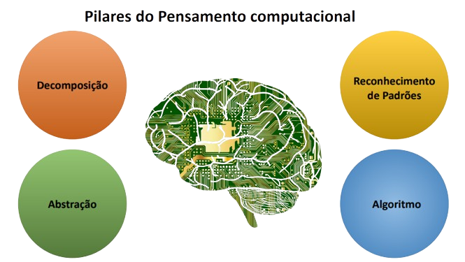

Minha história na programação 
Oi, tudo bem com você? Eu me chamo João Pedro Barros Queiroz e estou aqui pra te falar um pouco sobre mim e da minha história na programação.
Em primeira instância, eu sempre gostei de computador, isso eu não vou mentir. Porém, eu nunca pensei em ser programador, nunca pensei em realmente levar isso a sério, para mim "mexer" no computador era apenas um hobbie ou simplesmente uma diversão momentânea.
Na verdade o meu foco sempre esteve em concursos militares ou arrumar um jeito de ,com estudo, ir longe na vida. Mas desde que me aprofundei um pouco mais nessa área de programação isso vem mudando...
No começo era mais uma tentativa de suceder na vida como qualquer outro jovem,
mas hoje eu sinto que provavelmente levarei isso para o resto da minha vida!
O curso visa qualificar o participante como profissional da área, um programador Front-End.
O profissional dessa área atua fundamentalmente em empresas de TI de forma geral e de desenvolvimento de tecnologias de softwares, sites, startups e agências de comunicação.
Resumidamente, é o profissional que chega mais próximo do usuário dentro dessa área de códigos, é o que vai facilitar a vida do usuário do outro lado da "telinha". Trabalhando juntamente com o Designer, ele visa enriquecer a tela do usuário do outro com opções, beleza e acima de tudo, praticidade!
Sempre procurando transmitir leveza e autencidade.
Módulo Básico 
|
- Iniciação a tecnologia da informação |
Módulo específico profissional 
| - Lógica de programação |
| - Front-End Essencial |
| - Desenvolvimento Web |
| - Integração de Competências Profissionais |